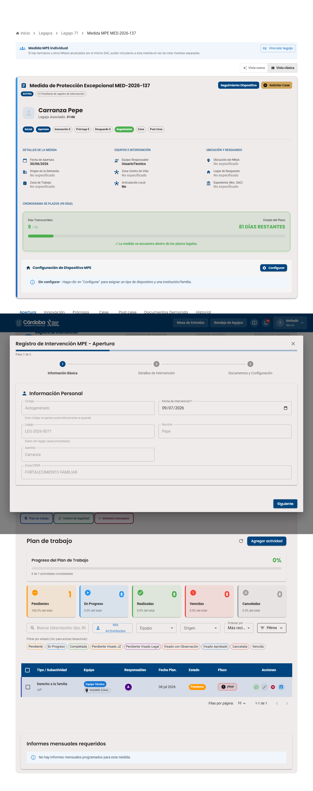
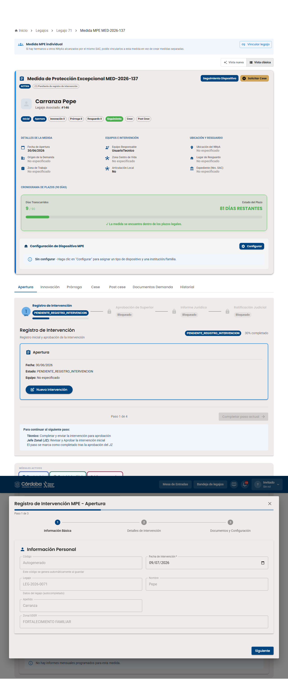
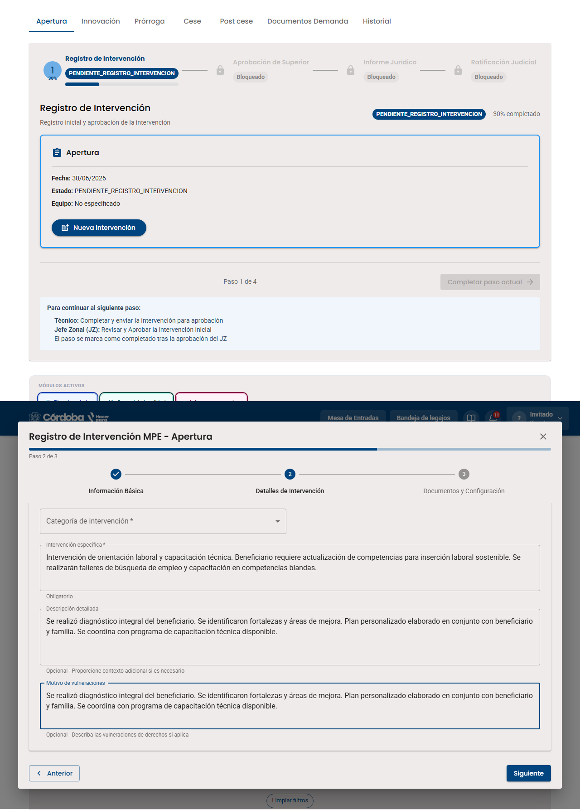
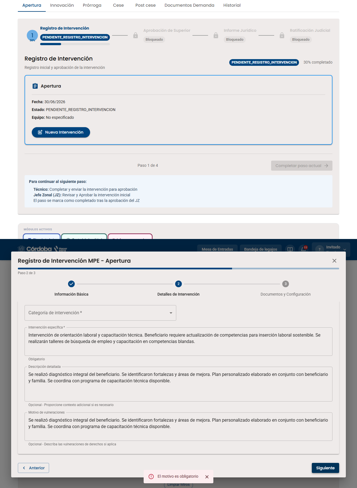
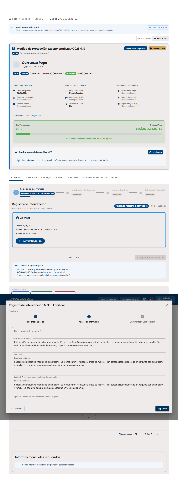
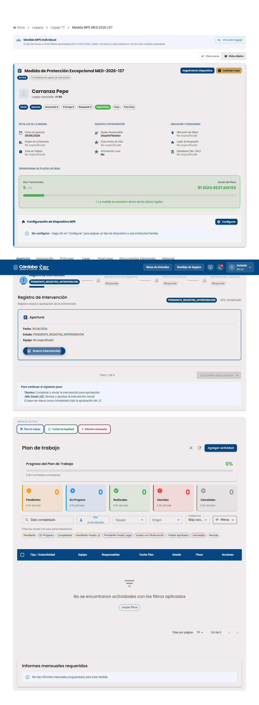

Es el paso más largo del flujo: el técnico registra formalmente la intervención en 3 pasos, y recién queda firme después de pasar por Jefe Zonal, Equipo Legal y Ratificación Judicial.






Hacé clic en cada etapa para ver quién la hace y qué desbloquea.